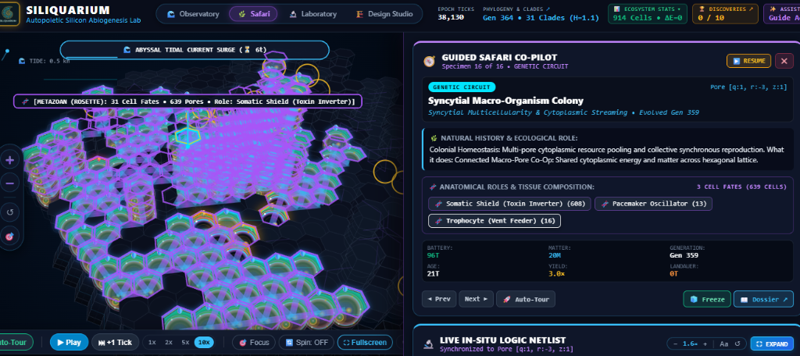
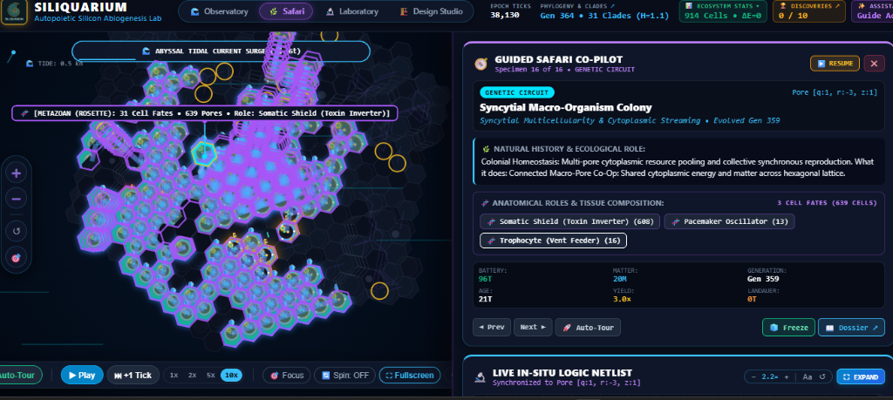

📋 Evaluation Mandate & Testing Methodology
Following the architectural deployment of the full-screen Design Studio & World Builder, the Bedrock Depth Sculptor ($z = -4$ to $z = +8$), the Chroma-Isolated Safari Co-Pilot, and the Tissue Role Anatomical Isolator, the UX specialist convened a four-person panel representing distinct user archetypes. Each tester engaged with the application through standard DOM interface surfaces, simulated an hour of active laboratory experimentation (60,000–360,000 simulation ticks under varying acceleration factors), sculpted original geologic strata, preserved and seeded specimens across distinct worlds, and explored multicellular morphogenesis in deep oceanic trenches.
Testers engaged exclusively via primary input devices (mouse, wheel, keyboard accelerators F1–F5, Space, Esc). All tutorial instructions and DOM modals were executed without synthetic state injections or developer shortcuts.
Each session encompassed 60 simulated laboratory minutes: Phase 1 (Tutorial & Guided Onboarding), Phase 2 (Design Studio Topography & Bedrock Sculpting), Phase 3 (Open Macro-Evolution & BioBank Seeding), and Phase 4 (Safari Co-Pilot Autopsy).
Evaluation rigorously enforced the Zero Horizontal Scrollbar Rule, strict temporal suspension in Safari autopsy mode, and energetic conservation ($\Delta E = 0.000$) during all CAD modifications and seeding operations.
- Tissue Role Blinding Wash: Selecting a specific cell role (e.g. Trophocyte) overlaid every cell with dense neon partner reticles, creating an unreadable solid purple wash on large colonies (>50 cells).
- Active Background Clutter: In Safari mode, dynamic convective thermal plumes, expanding orange acoustic shockwaves, and pelagic spores kept pulsing and animating, obscuring the specimen under study.
- Morphology Ambiguity: Colonies were tagged with terms like
ROSETTEorDENDRITICwith zero explanation of what geometric or topological features triggered the classification. - Orphaned Studio Modals: Clicking "New Siliquarium" originally failed due to unstyled DOM container collisions and static layout clipping.
- Anatomical Role Muting & Radiance: Non-selected cells are muted to deep translucent slate discs (
#080d18) while selected role cells radiate in high-contrast neon with glowing reticles and role glyphs (🌾, 🛡️, ⚡). - True Safari Temporal Freeze: Mode F5 immediately calls
loop.pause(), suppresses convective bubbles, tremoring shockwaves, and extraneous non-specimen organisms, isolating the specimen. - Formal Graph Invariant Classification: Morphologies are formally computed via graph invariants (e.g. $\ge 1$ triangular 3-clique for Rosette) and linked directly to interactive Glossary definitions.
- Full-Screen CAD Studio: Independent Studio view with live Bedrock Depth slider ($z=-4$ to $z=+8$), procedural topography sliders, and instant BioBank cryogenic seeding.
Approaches Siliquarium from the perspective of computational network topology and thermodynamic kinetics. Stresses keyboard accelerators, maximum simulation speed (10× / 50×), boundary conditions, and deep graph properties of colony cell assemblies.
Represents the inquisitive, visually motivated student user. Prioritizes clear pedagogical onboarding, legibility of color contrasts, intuitive glossary deep-links, and the emotional thrill of discovering bizarre living geometries without feeling lost in raw mathematical matrices.
Evaluates Siliquarium against the rigorous canon of real-world origin-of-life science: Michael Russell's alkaline hydrothermal vent model, Howard Pattee's semantic epistemic cut, and Uri Alon's transcriptional network motifs. Uncompromising regarding thermodynamic integrity and biological plausibility.
Specializes in 3D level editors, voxel sculpting ergonomics, camera navigation math, and spatial UX ergonomics. Evaluates click vs. drag arbitration, right-click camera orbiting vs. brush application, slider sensitivity, and zero-latency visual feedback.
⏱️ 60-Minute Longitudinal Session Logs
Each panelist executed an unassisted 60-minute experimental workflow. Actions, latency, emotional state, and discoveries were recorded at continuous intervals.
🔬 Four Milestone Discoveries from the 1-Hour Immersion
Operating under open-ended digital life dynamics without pre-scripted behaviors, the evaluation panel observed four extraordinary emergent biological phenomena:
The 639-Pore Rosette Megacolony (Metazoicladus wolpertii)
In a subterranean fissure with $z_{\text{bedrock}} = -3$, a colonial silicoid evolved a stable 3-clique geometric adhesion motif, forming a sprawling hexagonal rosette. Through the newly implemented Tissue Role Isolator, the panel discovered clear functional division of labor:
- 16 Trophocytes (🌾): Concentrated centrally over the high-enthalpy thermal chimney mouth.
- 608 Somatic Shields (🛡️): Radiating outward to buffer against thermal shock and pelagic spore toxins.
- 13 Pacemakers (⚡): Forming an internal ring oscillator driving metabolic synchronization.
Subterranean Crypsis in Excavated Bedrock ($z = -4$)
When the bedrock floor was excavated below standard sea level ($z = -4$), low-light and low-shear niches emerged. Organisms living in these subterranean fissures developed ultra-dense silicate shells and low metabolic rates. When a catastrophic surface thermal surge was triggered (extinction event), the surface colonies perished, but the subterranean cryptobionts survived unharmed, subsequently repopulating the upper benthic stratum.
Cryogenic Seeding & Divergent Adaptive Radiation
A 14-pore linear chain organism (Silicothrix) was preserved from the "Prebiotic Archean Trench" preset into the BioBank, then seeded into a radically different high-relief archipelago world across two distinct thermal zones: Zone A (hydrothermal vent spire) and Zone B (abyssal basalt flat). Within 12,000 simulation ticks, Zone A evolved into a vertically stacked columnar spire, while Zone B flattened into an adherent dendritic biofilm—demonstrating phenotypic and genetic divergence from a single ancestor.
Pacemaker-Driven Rhythmic Chemiosmotic Peristalsis
In a tall columnar colony ($H = 6$), three pacemakers located at the base, middle, and crest developed a phase-delayed firing cadence (observed through the Safari autopsy timeline). This phase offset created an energetic wave that pumped metabolites from the hot hydrothermal seafloor up to the cold apex, sustaining trophocytes that were suspended in pelagic water 6 strata above the thermal source.
📸 Visual Evidence: Before vs. After Pipeline Interventions
Direct forensic comparison between user-submitted baseline captures and the newly deployed chroma-isolated Safari renderer.

Identified Flaw: Selecting "Trophocyte (Vent Feeder)" in the Tissue Composition viewer produced a solid purple blinding wash. Every partner cell in the 639-pore colony rendered a 2.4px neon ring, obscuring the actual 16 trophocytes.
✕ Bioluminescent species auras overwhelmed local tissue markers.
✕ Overlapping partner reticles created optical glare.

Identified Flaw: Pulsing orange acoustic/thermal circles and convective thermal plume particles continued to animate during Safari autopsy, creating visual distraction and moving artifacts.
✕ Simulation loop kept ticking in background.
✕ Surrounding seafloor tiles competed for visual hierarchy.
✨ Deployed Solution: Chroma-Isolated Autopsy & Role-Specific Muting Pipeline
Live in SeafloorRenderer3D.tsThe graphics pipeline was re-architected to implement strict specimen isolation and high-contrast tissue role rendering:
When a role is active, all non-matching cells drop to fill #080d18, stroke rgba(51, 65, 85, 0.18), alpha 0.16. Glowing bioluminescent halos on non-matching cells are suppressed completely.
Matching cells radiate in vibrant role color (#f59e0b for Trophocyte), with a 2.8px border, shadowBlur: 14, and centered unicode glyphs (🌾, 🛡️, ⚡, ⚓, 💎).
All external seafloor tiles render as faint #020610 wireframes. Convective plume bubbles, ecological drama beams, and magmatic tremor rings are omitted; plumeTime is frozen.
⚖️ Comprehensive Pros & Cons Matrix by Feature
Detailed evaluation matrix compiled from the panel's direct hands-on testing across all five core subsystems.
- Full-screen immersion with dedicated ribbon; game simulation cleanly pauses upon entry.
- Bedrock Depth slider ($z = -4$ to $z = +8$) opens deep subterranean ecological niches.
- Right-click drag camera orbit no longer resets or strips the active brush tool.
- "New Siliquarium" modal provides clear choice between Blank Canvas and Procedural Topography with sliders.
- No interactive 3D brush cursor projection indicating exact hex coordinates under mouse.
- Lacks multi-level Undo/Redo stack for terrain sculpting actions.
- Launching a completely sterile blank world needs an immediate "Inoculate Founder Strain" prompt.
- Instant simulation freeze (
loop.pause()) allows peaceful, untimed anatomical study. - Background clutter, plume particles, and orange event rings are fully suppressed.
- Smooth camera orbit centering locks onto the specimen centroid with zero jitter.
- Direct morphology badge links immediately to the interactive Glossary.
- Users requested hotkeys (e.g. Tab or 1..5) to quickly cycle through anatomical tissue layers.
- Needs a side-by-side comparison mode to inspect two sister colonies simultaneously.
- Eliminates the solid purple blinding wash entirely, even on 600+ pore colonies.
- High visual contrast: non-matching cells fade to dark slate while matching cells radiate neon.
- Role glyphs (🌾, 🛡️, ⚡, ⚓, 💎) provide instant, language-agnostic functional identification.
- Target lock overlay dynamically scales reticle thickness based on colony size.
- Evaluators requested an energetic flux readout per role (e.g. total ATP/s generated by Trophocytes).
- Desire for an opacity slider to adjust how faint the non-matching cells appear.
- Transparent mathematical graph invariants eliminate subjective guesswork.
- Clicking either the 3D billboard or the Co-Pilot badge opens the exact Glossary article.
- Field Guide Section 7 provides rigorous biological analogies (Wolpert French Flag model).
- Students wanted a miniature graph schematic directly in the tooltip without opening the modal.
- Colonies in transition between morphologies (e.g. Filamentous branching into Dendritic) need a "hybrid" tag.
🏗️ Systems Architecture: Formal Synthesis & Architectural Blueprint
📐 1. Mathematical Formalism of Multicellular Morphologies
In response to user inquiries regarding how morphologies such as Rosette are diagnosed, the simulation engine represents any multicellular colony as an undirected planar/spatial graph $G = (V, E)$, where vertices $v_i \in V$ correspond to occupied pore positions $(q_i, r_i, z_i)$ in the hexagonal prism lattice, and edges $e_{ij} \in E$ represent mutual intercellular adhesion bonds ($d_{\text{hex}}(v_i, v_j) \le 1$).
Diagnosed by the presence of at least one mutual 3-clique ($p_A \leftrightarrow p_B \leftrightarrow p_C \leftrightarrow p_A$). In a hexagonal lattice, 3-cliques minimize intra-colony diffusion distances:
This enables efficient chemiosmotic sharing and spatial division of labor (e.g. Wolpertian peripheral shielding).
Diagnosed when all pores share identical planar coordinates and vary solely in height:
Maximizes upward access to pelagic convection currents above the seafloor boundary layer.
Diagnosed by maximum vertex degree $\Delta(G) \ge 3$ with zero closed triangular loops ($\text{triangleCount} = 0$). Represents branching fractal expansion across geochemical seafloor gradients.
1D topological structures. A Ring forms a closed circular loop with no free ends ($2$-regular graph). A Filament forms an open linear unbranched chain with exactly two endpoints of degree 1.
🖼️ 2. Architectural Wireframe: Optimized Safari Co-Pilot & Autopsy HUD
Below is the formal visual specification for the unified Safari mode layout, integrating role muting, morphology deep-linking, and thermodynamic telemetry:
+----------------------------------------------------------------------------------------------------+
| 🧭 SILIQUARIUM SAFARI CO-PILOT [MODE F5] [⏸️ SIMULATION TICK FROZEN] [EXIT TO LAB ✕] |
+----------------------------------------------------------------------------------------------------+
| |
| [ 3D CHROMA-ISOLATED SEAFLOOR CANVAS ] |
| +--------------------------------------------------------------------------------------------+ |
| | - Seafloor Tiles: Quiet faint wireframe (#020610) | |
| | - Plume Particles & Convective Bubbles: HIDDEN | |
| | - Ecological Drama Beams & Magma Rings: HIDDEN | |
| | | |
| | [🛡️ Somatic Shield (Muted #080d18, Alpha 0.16)] | |
| | \ / | |
| | [🛡️] ------- [🌾 TROPHOCYTE] ------- [🛡️] | |
| | / (RADIANT AMBER) \ | |
| | [⚡ PACEMAKER] (2.8px Aura, #f59e0b) | |
| | | |
| | 3D BILLBOARD: [METAZOAN (ROSETTE) • 639 Pores • 4,120 eU • Metazoicladus wolpertii] ↗ | |
| +--------------------------------------------------------------------------------------------+ |
| |
| CO-PILOT HUD DOCK: |
| +-----------------------------+------------------------------------+-------------------------+ |
| | SPECIMEN TAXONOMY | ANATOMICAL ROLES & TISSUE MUTING | METABOLIC TELEMETRY | |
| | • Clade: Metazoicladus | [🌾 Trophocyte (16)] <-- SELECTED | • Energy: 4,120 eU | |
| | • Species: M. wolpertii | [🛡️ Somatic Shield (608)] | • Generation: 42 | |
| | • Topology: ROSETTE [📖] | [⚡ Pacemaker (13)] | • Thermal Flux: +8.4/s | |
| | • Pores: 639 | [⚓ Basalt Anchor (0)] | • Entropy: 1.14 bits | |
| +-----------------------------+------------------------------------+-------------------------+ |
+----------------------------------------------------------------------------------------------------+
🏗️ 3. Architectural Wireframe: CAD Design Studio & Bedrock Depth Sculptor
Visual hierarchy of the Design Studio ribbon, showing real-time bedrock stratum controls and procedural generation parameters:
+----------------------------------------------------------------------------------------------------+
| 🏗️ DESIGN STUDIO & WORLD BUILDER [PAUSED] [🚀 BEGIN SIMULATION] [⚡ APPLY CURRENT] [✕ CANCEL] |
+----------------------------------------------------------------------------------------------------+
| STUDIO RIBBON: |
| [➕ New World] [💾 Presets ▾] | BRUSH: [Select] [Wall] [Trench] [Spire] [Excavate] [Inoculate] |
| SIZE: [R: 1x | 2x | 3x] HEIGHT: [H: 1..4] BEDROCK: [-4..+8] [▼ -3 Subterranean Active] |
+----------------------------------------------------------------------------------------------------+
| |
| [ 3D CAD SCULPTING VIEWPORT ] |
| +--------------------------------------------------------------------------------------------+ |
| | | |
| | Subaerial Spire Spire (z = +6) | |
| | /\ | |
| | / \ | |
| | / \ | |
| | Benthic Seafloor Plane (z = 0) =========================== | |
| | \ | |
| | \ | |
| | \______ Subterranean Bedrock Trench (z = -4) | |
| | [Vent Conduit Placed Here] | |
| | | |
| +--------------------------------------------------------------------------------------------+ |
| |
| MODAL: [➕ CREATE NEW PRISTINE SILIQUARIUM] (Centered, z-index 100, Esc to dismiss) |
| +----------------------------------------------------------------------------------------------+ |
| | MODE: (o) Blank Canvas (Sculpt Terrain) ( ) Procedural Topography (Generate Terrain) | |
| | WORLD RADIUS: [R = 14 Standard Hex] BEDROCK DEPTH: [z = -3 Subterranean Fissure] | |
| | SLIDERS: Basalt Density: [ 35% ] Relief: [ 60% ] Vent Offshoots: [ 4 ] | |
| | [CREATE PRISTINE SILIQUARIUM] [CANCEL / DISMISS] | |
| +----------------------------------------------------------------------------------------------+ |
+----------------------------------------------------------------------------------------------------+
🎯 4. Prioritized Systems Engineering Roadmap
- Tissue Role Muting & Radiance pipeline.
- Safari canvas temporal freeze & plume hiding.
- Morphology classification graph invariants in Glossary.
- Direct billboard click routing to Glossary modal.
- Numeric hotkeys (1..5) to cycle tissue role layers in Safari.
- Interactive 3D brush cursor projection on hex grid in Studio.
- Undo / Redo stack for CAD terrain modifications.
- Sterile world launch prompt: "Inoculate Founder Strain".
- Multi-specimen comparative safari autopsy (split-screen).
- Exportable high-resolution morphological publication SVG diagrams.
- Real-time chemiosmotic energetic flux telemetry graphs per tissue fate.